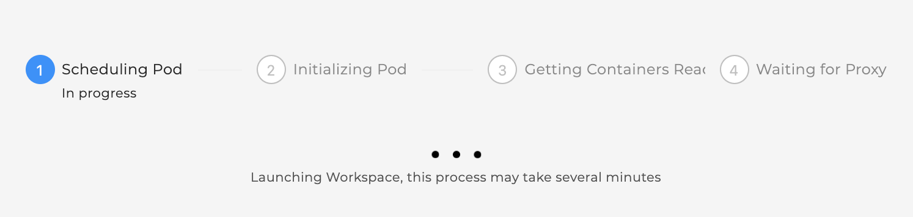
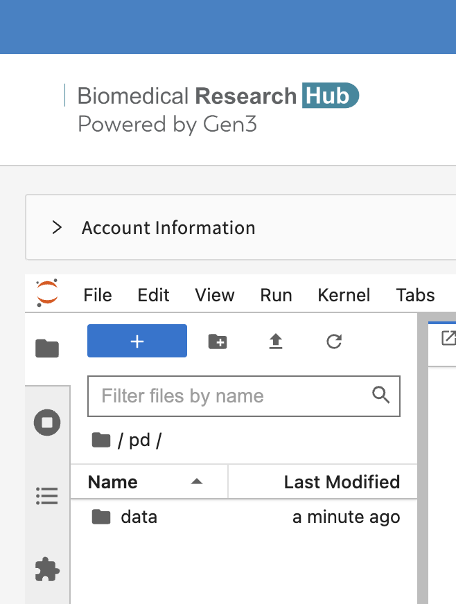
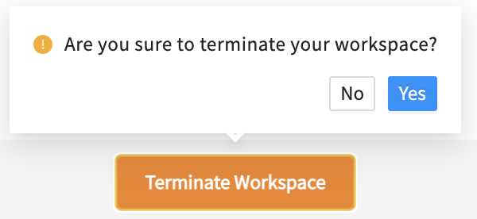

Workspaces¶
To use the workspace, users must register for workspace accounts to use the workspaces, as described on the Workspace Registration page.
BRH workspaces are secure data analysis environments in the cloud that can access data from one or more data resources. By default, Workspaces include Jupyter notebooks, Python and R, but can be configured to host virtually any application, including analysis workflows, data processing pipelines, or data visualization apps.
New to Jupyter? Learn more about the popular tool for data scientists on Jupyter.org (disclaimer: CTDS is not responsible for the content).
Guideline to get started in Workspaces¶
Once users have access to workspaces, use this guide below to get started with analysis work in workspaces.
-
Users need to log in via https://brh.data-commons.org/login to access workspaces.
-
After navigating to https://brh.data-commons.org/workspace, users will discover a list of pre-configured virtual machine (VM) images, as shown below.
- (Generic) Jupyter Notebook with R kernel: Choose this VM if you are familiar with setting up Python- or R-based Notebooks, or if you just exported one or multiple studies from the Discovery Page and want to start your custom analysis.
- Tutorial Notebooks: Explore our Jupyter Notebook tutorials written in Python or R, which pull data from various sources of the Biomedical Research Hub to leverage statistical programs and data analysis tools. These are excellent resources for code to pull and analyze data from BRH, and examples that illustrate the variety of data and analyses available through BRH.
-
Click “Launch” on any of the workspace options to spin up a copy of that VM. The status of launching the workspace is displayed after clicking on “Launch”. Note: Launching the VM may take several minutes.

-
After launching, the home folders are displayed. One of these folders is the user's persistent drive ("/pd").
-
Select the /pd folder. New files or licenses should be saved in the the /pd directory if users need to access them after restarting the workspaces. Only files saved in the /pd directory will remain available after termination of a workspace session.
[]
- Attention: Any personal files in the folder “data” will be lost. Personal files in the directory /pd will persist.
- Do not save files in the "data" or “data/brh.data-commons.org” folders.
- The folder “brh.data-commons.org” in the “data” folder will host the data files you have exported from the Discovery Page. Move these files to the /pd directory if you do not want to have to export them again.
- /pd has a capacity limit of 10GB.
-
Start a new notebook under “Notebook” in the Launcher tab. Click the tiles in the launcher and choose between Python 3 or R Studio as the base programmatic language. Note: You can open and run multiple notebooks in your workspace. However, the generic, tutorial and nextflow workspace images are currently separate docker images, so there is no functionality to combine them or run nextflow in the tutorial or generic images. This may be available in the future, after further testing and development activities.
-
Experiment away! Code blocks are entered in cells, which can be executed individually or all at once. Code documentation and comments can also be entered in cells, and the cell type can be set to support Markdown.
Results, including plots, tables, and graphics, can be generated in the workspace and downloaded as files.
-
Do not forget to terminate your workspace once your work is finished. Unterminated workspaces continue to accrue computational costs. Note, that Workspaces automatically shut down after 90 minutes of idle time.

Further reading: read more about how to download data files into the Workspaces here.
Upload, save, and download Files/Notebooks¶
Users can upload data files or Notebooks from the local machine to the home directory by clicking on “Upload” in the top left corner. Access the uploaded content in the Notebook (see below).
Then run in the cells, for example:
import os
import pandas as pd
os.chdir('/data')
demo_df = pd.read_csv('/this_is_a_demo.txt', sep='\t')
demo_df.head()
Users can save the notebook by clicking "File" - "Save as", as shown below.
Users can download notebooks by clicking "File" - "Download", as shown below. Download the notebook, for example, as ".ipynb".
Environments, Languages, and Tools¶
The following environments are available in the workspaces:
-
Jupyter Lab

The following programmatic languages are available in Jupyter Notebooks:
- R
- Python 3
The following tools are available in Jupyter Notebooks:
- GitHub (read GitHub documentation)
Python 3 and R in Jupyter¶
Both Python 3 and R are available in Jupyter Notebooks.
Users can expect to be able to use typical Python or R packages, such as PyPI or CRAN. For Python and R, users can start a new notebook with a tile under "Notebook", as shown below.
Automatic Workspace Shutdown¶
Warning: When a BRH Workspace reaches the STRIDES Credits limit for STRIDES Credits Workspaces, or reaches the Hard Limit for STRIDES Grant Workspaces, the Workspace will be automatically terminated. Please be sure to save any work before reaching the STRIDES Credit or Hard Limit.
Warning: Workspaces will also automatically shut down after 90 minutes of idle time. A pop-up window will remind users to navigate back to the workspaces page in order to save the data.